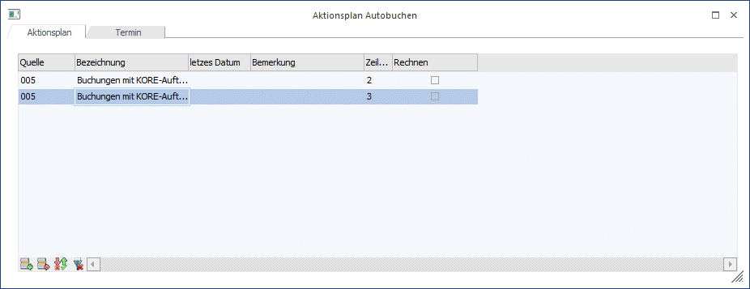

Im Aktionsplan kann hinterlegt werden, zu welchen Zeiten bestimmte Buchungsstapel (im Menüpunkt Buchen/Buchen/Dialog-Stapel erstellt) automatisch abgerufen werden sollen.

Wenn das Fenster "Aktionsplan" geöffnet wird, erhalten Sie ein zweites Register "Termin". In diesem Fenster "Termin bearbeiten" kann definiert werden, wann und wie oft der Stapel abgearbeitet werden soll.
Ø Quelle
Eingabe des Quellstapels, der dupliziert werden soll. Durch Anklicken des Pfeil-nach-unten-Symbols kann der gewünschte Buchungsstapel selektiert werden (der Buchungsstapel wurde im Menüpunkt Buchen / Buchen Dialog-Stapel erstellt und gespeichert).
Ø Letztes Datum
Anzeige des letzten Stapellaufs, der automatisch abgerufen wurde
Ø Bemerkung
Eingabe einer sprechenden Bezeichnung des Buchungsstapels
Ø Zeilennummer
Hier wird die Zeilennummer vom Programm eingegeben, die den Einstellungen aus dem Fenster "Termin bearbeiten" entspricht.
Mit OK wird der Aktionsplan gespeichert.
Diese Funktion soll wiederkehrende Buchungsvorgänge automatisieren, z.B. Abonnementzahlungen, Mieten, etc.
Der Abruf der Automatikbuchungen erfolgt im Menüpunkt Buchen/Auto-Buchung.